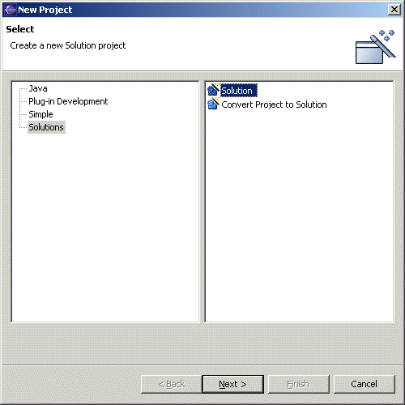
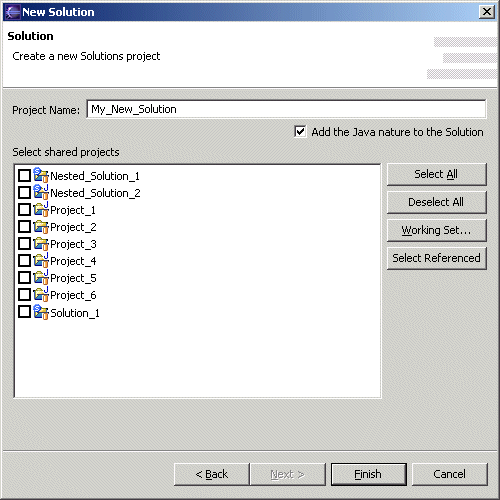

Solution Wizards |
introduction actions editor wizard messages |
The  Solution wizard is used to create new
solutions while the
Solution wizard is used to create new
solutions while the  Convert
Project to Solution wizard converts existing
projects into solutions. When an existing project such as a java
project is converted to a solution, it does not loose its java nature, but
simply gains new solution functionality in addition to its existing java
functionality. Since Eclipse does not provide a
Convert to Java Project wizard, if you have already created a solution that
you now want to convert into a java project, simply use the Convert Project to Solution
wizard and check the Add Java nature to Solution checkbox.
Convert
Project to Solution wizard converts existing
projects into solutions. When an existing project such as a java
project is converted to a solution, it does not loose its java nature, but
simply gains new solution functionality in addition to its existing java
functionality. Since Eclipse does not provide a
Convert to Java Project wizard, if you have already created a solution that
you now want to convert into a java project, simply use the Convert Project to Solution
wizard and check the Add Java nature to Solution checkbox.

On the next page in the Solution wizard, you enter the name of the name of the new solution to be created, and select the projects and nested solutions to be contained in that new solution. Please note that only shared projects (projects and solutions already stored in a repository) will appear in this list. Projects that are not shared can not be added to a solution.

There are several buttons in the Solution wizard to help selecting projects and nested solutions to be contained by the new solution:
-
Select All
Selects all projects and solutions in the list -
Deselect All
Deselects all projects and solutions in the list -
Working Set
Opens a working set selection dialog. The projects and solutions contained in whichever working set is selected will then be selected in the Solution wizard. -
Select Referenced
Any projects referenced by projects already selected in the Solution wizard will themselves be selected in the Solution wizard.
The Convert Project to Solution wizard is identical to the Solution wizard except that it is used to add solution behavior to existing projects rather than create new projects. If the Convert Project to Solution wizard is used on a project that is already a solution, it simply modifies the specification of that solution.